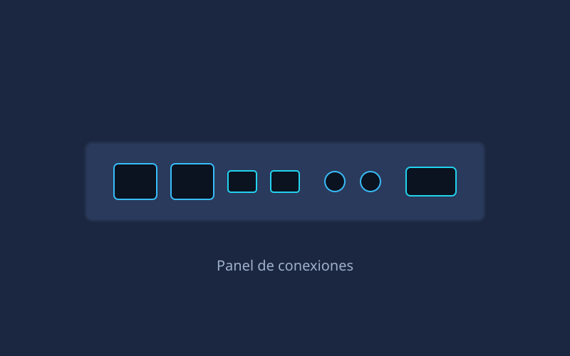
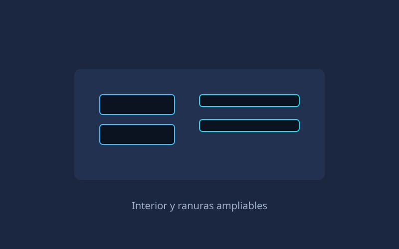

Inicio/NUC Pro X

Gama oficina · profesional
NUC Pro X
El todoterreno de la casa. Con un Intel Core i7 de 13ª generación y doble Thunderbolt 4, es capaz de mover tres monitores 4K sin despeinarse.
Especificaciones técnicas
Datos de referencia del modelo base. Configurable en el momento de la compra.
| Procesador | Intel Core i7-1360P (12 núcleos, 16 hilos, hasta 5,0 GHz) |
|---|---|
| Gráficos | Intel Iris Xe Graphics (96 EU) |
| Memoria RAM | 32 GB DDR5-4800 SO-DIMM (2 ranuras, máx. 64 GB) |
| Almacenamiento | 1 TB SSD NVMe PCIe 4.0 (2 slots M.2 2280) |
| Vídeo | 2 × HDMI 2.1 + 2 × Thunderbolt 4 (DisplayPort Alt Mode) |
| Puertos USB | 4 × USB-A 3.2 Gen2, 2 × USB-C (Thunderbolt 4) |
| Red | Ethernet 2.5 GbE · Wi-Fi 6E · Bluetooth 5.3 |
| Audio | Jack 3,5 mm combo, audio digital por HDMI/DP |
| Dimensiones | 117 × 112 × 54 mm · 0,7 litros |
| Peso | 620 g |
| Alimentación | Fuente externa 120 W · consumo típico 15 W |
| Soporte VESA | Incluido (75 × 75 mm y 100 × 100 mm) |
| Garantía | 3 años |
Puntos destacados
- Doble Thunderbolt 4 para dock, almacenamiento externo rápido o eGPU.
- Refrigeración con dos heatpipes y ventilador de 60 mm de baja sonoridad.
- Compatible con montaje VESA para liberar por completo el escritorio.
- Arranque desde NVMe con tiempos de carga por debajo de 8 segundos.
- Soporte nativo de tres pantallas 4K a 60 Hz simultáneas.
Galería
Imágenes de ejemplo del chasis y los detalles de conexión.

